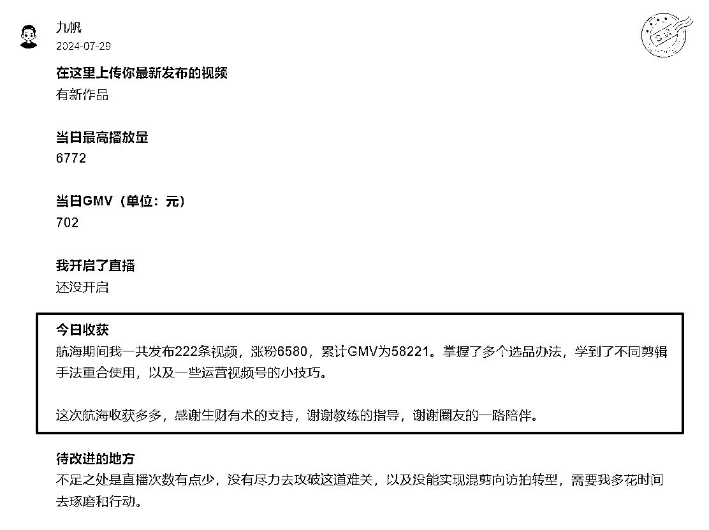

来源：https://xunyue66.feishu.cn/docx/Y0xHd03NKoZ44VxS6yCcvEernUh
2024年，我们见证了市场平台的起伏和不确定性。许多人可能会说，今年的电商非常卷，商家们都在数据下滑，我们的视频号带货航海训练营却逆流而上，创造了非常棒的结果。
“长风破浪会有时，直挂云帆济沧海。”我们站在航行的彼岸，回望那一段段带货实战的航程，心中充满了自豪与激动。很荣幸作为这次视频号带货航海的主教练，和圈友们一同航行，一同成长，这次也是第一次尝试从21天的常规航海，升级为47天的长期航海，作为长期航海的初次试水，圈友们拿到了非常棒的实战结果。
这次航海共1189名船员，从视频号的海洋中扬帆起航，经历了数次的试炼与挑战。最终814名圈友成功上岸，他们发布了超过150个带货视频，整体以85%的出单率，创造了总计约350万+的出单总金额，人均出单达到了3554元的辉煌战绩，共计打卡24582次、6349件好事发生。
这次的时候带货航海，首次从21天调整为为期一个半月的长期航海，主要因为整个流程从0-1可以21天掌握，但实操和落地需要更多时间精力来让子弹多飞一会儿，我们是长期玩法，需要不断打磨好对平台用户还有产品的认知，在细分赛道内沉淀下去，测试类目测试产品测试账号。
往期很多圈友结营之后反馈，诚哥我出单了，诚哥我小爆了几百单，等等。21天完成了0-1的培训后，实操的时间太少，尤其大部分圈友是副业做项目，寻求不同的玩法来尝试选择适合自己的副业，光看完课程就已经费尽精力，更加没有时间每天选品、拆解、选素材、以及拍摄剪辑发布运营直播等关键动作了，拉长了时间线，增加了子弹的飞行速度。
还有个关键点在于这次整体航海限报2个，之前是3个甚至更多，本身精力就不多，再分散到不同的项目，会严重导致航海实战打折扣，记得这次第六次直播课分享的时候，其他航海临近尾声，有圈友说自己刚忙完公司的项目终于有时间开始参加视频号带货的航海实战了，我说不着急，虽然过了一半多的时间，还有半个多月，只要精力集中足够完成上岸和拿到不错的结果。
人无我有，人有我优--生财实战结果高产的独门利器
航海手册 —— 《武学入门》
江湖之中，每一位武学新手都需从《武学入门》开始，这是一本记载了视频号带货基础功夫和心法的宝典。为初学者指引方向，是踏入视频号带货的第一步，一本视频号百科全书。
高手领航 —— 《武学讲堂》
航海期间一共进行了8次直播领航，通过直播分享，带领圈友们深入解读航海手册和答疑最新实战遇到的各项问题，及时解惑。
群内答疑 —— 《群雄解惑》
每个群配备专属答疑教练和领队，在群内答疑解惑的过程，无论是选品上的困惑还是运营上的难题，都能在这里找到答案。
作业点评 —— 《剑谱点评》
圈友们在航海过程中，会将自己的日常打卡记录下来，形成“”剑谱“”。而教练们则会对这些日志进行点评，同步给其他圈友一起精进。
高手分享 —— 《江湖传经》
江湖之中，不乏有识之士愿意分享自己的经验和心得。高手分享便是圈友侠客们分享自己做视频号带货的经验和避坑试错的过程，让后来者能够站在前人的肩膀上，更快地成长。
这次航海最大的感触就是圈友们非常积极参与航海，这次整体上岸人数814人、共计打卡24582次、6349件好事发生，47天每天都坚持打卡总结当日实战进度和思考
圈友航海日志打卡部分截图

视频号带货的渠道依然可以作为深耕3-5年以上的赛道，整体平台商业流量还有很大空间，尤其很多细分赛道缺少带货博主。所以才会出现各种抖音快手小红书两三年前爆过的产品，在视频号现在还能卖的很火。
视频号航海注重实操落地，快速掌握带货相关技能
47天感觉很长，一个半月的时间，其实也很短，每天工作生活，日子一晃而过，通过47天测试和学习一个玩法，测试是否适合自己，无论是作为副业还是项目测试，都有一份不错的收获。
航海结束其实是新的征程的开始，有些话相对伙伴们分享，江湖之路，风雨兼程，一时的沉寂是为了更华丽的爆发。每一次尝试都是在积累内力，每一次挫折都是在磨砺剑心。莫要气馁，沉下心来，研习秘籍，洞察市场，找准时机，相信下一次，你必能一剑封喉，斩获佳绩！
最后，感谢生财团队和领队志愿者们一起的辛勤付出，每次航海都是一次成长，让我们期待下一次的航海，再次共同迎接新的挑战，我的微信95644261，欢迎链接。
一起生财有术！